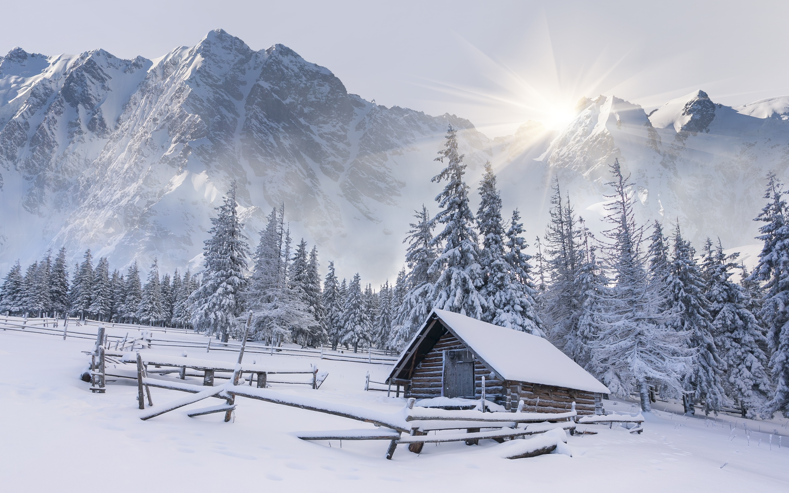

<div class="container">
  <div class="photo-block">
    
  </div>
  <!--<div class="description">-->
    <!--<q class="quote">-->
      <!--« Обнаженные модели на картинах Е. Щёкиной - полная свобода пластики, открытость миру. Как человек, сочетавший в себе философа и живописца, она не испугалась табу и откровенно поставила вопрос: что проще современной женщине обнажить – тело или душу? Ответ каждый зритель находит сам… Всмотритесь в картины Елены Щёкиной в зале ХХI века Музея современного искусства Одессы. Раскаленная, но еще неподвижная магма чувств. Не нужно спрашивать себя, что это – левитация, медитация. Ощутите биение своего сердца. И поймете, что вы вошли в резонанс с биением сердца художницы.-->
      <!--«В одном из своих трудов Зигмунд Фрейд утверждал: «Культура – это метафора секса». Елена Щёкина, художник и философ, решила поспорить и доказать, что в ХХI веке секс стал метафорой культуры».-->
    <!--</q>-->
    <!--<div class="author">-->
      <!--Евгений Голубовский <br>-->
      <!--украинский журналистписатель и коллекционер, <br>-->
      <!--вице-президент Всемирного клуба одесситов.-->
    <!--</div>-->
    <!--<q class="quote">-->
      <!--«Елене Щёкиной удалось,на мой взгляд, главное – точно зафиксировать и передать не только «предлагаемые обстоятельства», но и настроение фигурантов её сюжетов».-->
    <!--</q>-->
    <!--<div class="author">-->
      <!--Анатолий Баканурский <br>-->
      <!--доктор искусствоведения, профессор, пистель-->
    <!--</div>-->
    <!--<q class="quote">-->
      <!--«Всегда думаешь о том, какое пространство-время в картине? У Лены Щекиной  -  только море, солнце и два любящих друг друга существа. It takes two to tango»-->
      <!--«Может быть, Лена Щёкина прислана инопланетным разумом осуществить сексуальную, живописную и прочие революции в одесской, пресловутой южнорусской школе»-->
    <!--</q>-->
    <!--<div class="author">-->
      <!--Алексей Титаренко искусствовед, член НСХУ.-->
    <!--</div>-->
    <!--<q class="quote">-->
      <!--« Холсты Елены Щёкиной обладают «пустотностью», - оставленные пробелы, фрагменты чистого пространства становятся отдельной возможностью для вдохновения (и даже проникновения!) в полотна; тем, что абсолютно несвойственно большинству других наших живописцев.»… «Елена Щёкина  предлагает и предполагает диалог. И тогда живопись может стать, открыться зрителю как ЖИВОЕ письмо,живопись.»-->
    <!--</q>-->
    <!--<div class="author">-->
      <!--Ута Кильтер <br>-->
      <!--тележурналистка, арт-критик, актриса, <br>-->
      <!--видеомейкер и перформер.-->
    <!--</div>-->
    <!--<q class="quote">-->
      <!--«Прекрасный рисунок – сильная сторона творчества Щёкиной. Женские тела, схваченные в сложном движении одной линией, свободное владение графическими техниками. Но, когда в основу живописи ложится рисунок, обычно бледнеют ее колористические качества, и Елена «убирает» достигнутое мастерство внутрь произведения, выводя на первый план образы, решенные за счет столкновения цветовых пятен».-->
    <!--</q>-->
    <!--<div class="author">-->
      <!--Сергей Князев художник, искусствовед, философ-->
    <!--</div>-->
  <!--</div>-->
  <div class="biography" *ngIf="getCurrentLanguage()==languages[0]">
    биография на русском
  </div>
  <div class="biography" *ngIf="getCurrentLanguage()==languages[1]">
    на английском
  </div>
  <div class="biography" *ngIf="getCurrentLanguage()==languages[2]">
    на украинском
  </div>
</div>
